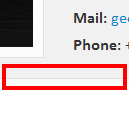
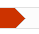
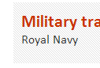

More and more recruiters combing the net to find talented people. This, tobCV, is a html template that will help you set up your own personal online CV. Hopefully some recruiter will come by and spot you!
| Image | Description | Example |
|---|---|---|
| headerEdge.png | Used to produce the "over the edge effect" for the section headers. Some, partly transparent, sections makes the background color shine through | |
| portrait.png | Just an example image of a portrait. Replace this with your own portrait | |
| shadow.png | Used to produce the shadow effect separating the header section from the body section |  |
| skillOverlay.png | Used to produce the pointer for the skill bar. Some, partly transparent, sections makes the background color shine through |  |
| darkStripes.png | Used as background image for the headers of work- and education section |  |
| stripes.png | Used as background image for the top bar. The stripes are partly transparent to let the background color shine through |